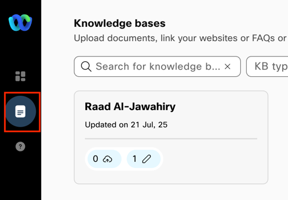
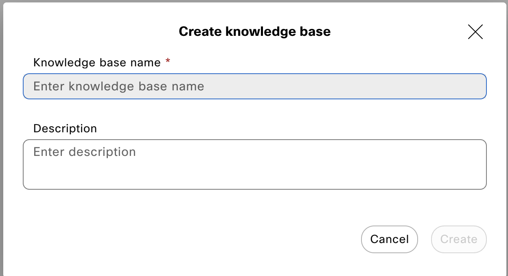
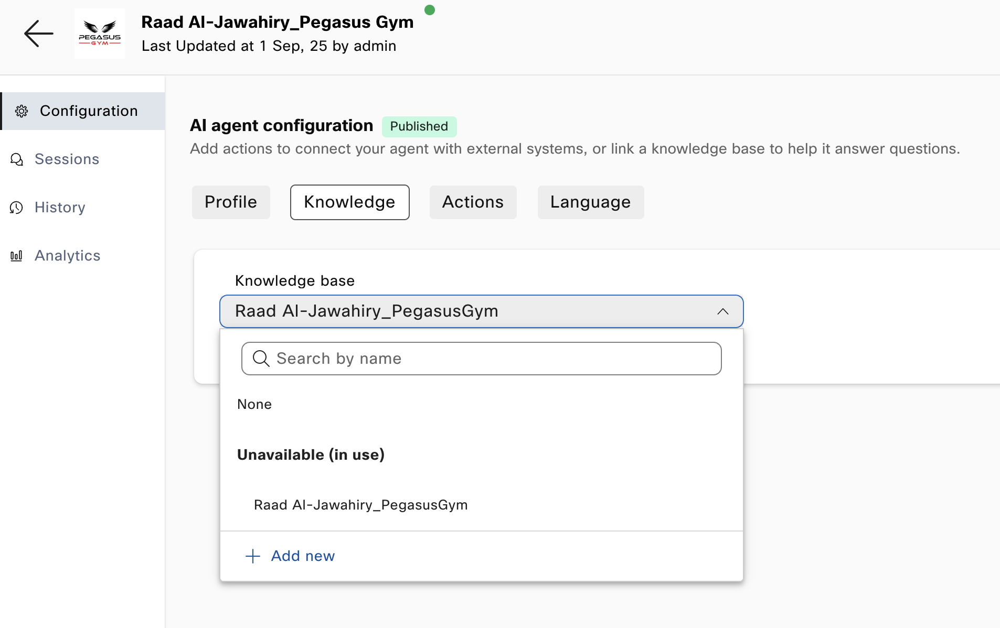

Lab Exercise
Step 1: Initial Setup
- Login to Webex Control Hub (https://admin.webex.com)
- Go to Contact Center > AI Agents.
- Select Build your AI Agent,
- In the top right of the screen select + Create agent.
- You will see a list of templates. For today lets select Start from scratch and then Next
- Now select Autonomous
- Complete the configuration below:
- Agent name (Make this your name_business)
- AI engine (Set to Webex AI Pro 1.0)
- Agent Goal (Describe what this AI Agent will do)
- Click Create

Step 2: AI Agent Configuration
- Under AI Agent Configuration click on Profile
- Complete the Instructions field with step by step instructions for your agent to accomplish its goals
Example:
*- Summarize the user's request and ask them to confirm that you understood correctly. - If necessary, seek clarifying details.
- Thank the user for their business and say goodbye.*
- Complete the Welcome Message field with the first message you want the AI Agent to say
- Click Save Changes

Step 3: Build Knowledge Base
- Click on Knowledge

- Click + Create Knowledge Base

- Enter a Knowledge Base Name (Make this your name) and then Create
- In Files you can drag and drop pdf, docx, txt, xlsx, xls or csv documents you want the AI Agent to learn and answer the customers query with
- In Documents you can click + Create Document
- Give it a Document name and then Add to new category and give the category a name
- In the document you can copy and paste any information you want the AI Agent to know about including images and flash pages


Step 4: AI Agent Knowledge & Actions
- Go to Dashboard
- Locate your AI Agent and click on it
- Click on Knowledge and find your Knowledge base from the drop down menu

- Click Save changes
- Click Actions and then +New action
- Action Name – Call it customer_information
- Action description – explain to the AI Agent that this is the questions to ask the user if they are interested in signing up
- Action Scope – Select Slot Filling and fulfillment
- Under Slot Filling click + New input Entity
- Entity name – name the field such as Customer_Name
- Entity type – Select from the drop down menu the type of data you are gathering (Select String if its just customer name)
- Entity description – In plain text enter a description of the field
- Required – Set this to Yes
- Repeat the previous step for all the information you want to collect from the customer
- Under “Webex Connect Flow Builder Fulfillment”
- Select Service – Set this to Webex_One_2025
- Select Flow – Set this to AI Agent
- Optional extra step is to go to https://raljawah1xsw.us.webexconnect.io/ and create your own service
- Select Save
- Once completed select Publish
- Got to Language and select the language you would like your AI Agent to speak/chat in
- Select Save Changes

Step 5: Testing & Q&A
- In Dashboard select your AI Agent
- Click Preview (Located top right of the screen)
- Select Start a chat or Start a call
- Edit profile, knowledge and Actions as required to make it perfect
- Congratulations you are now a AI Developer!
Helpful Resources